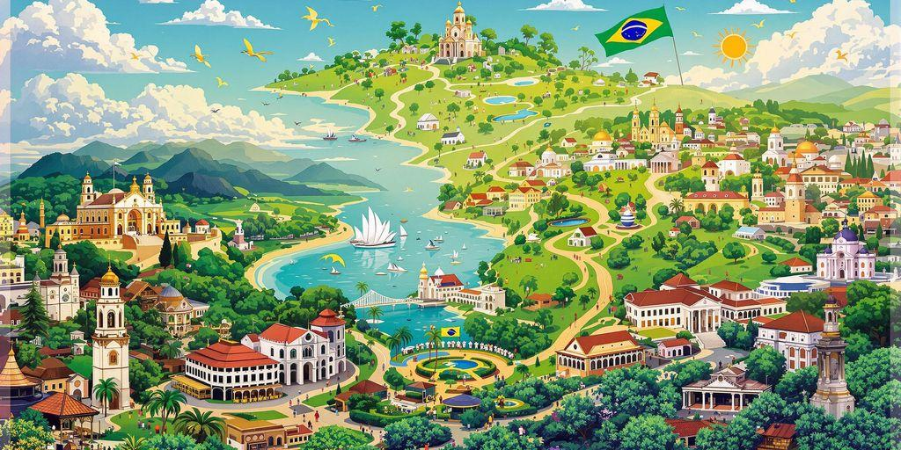
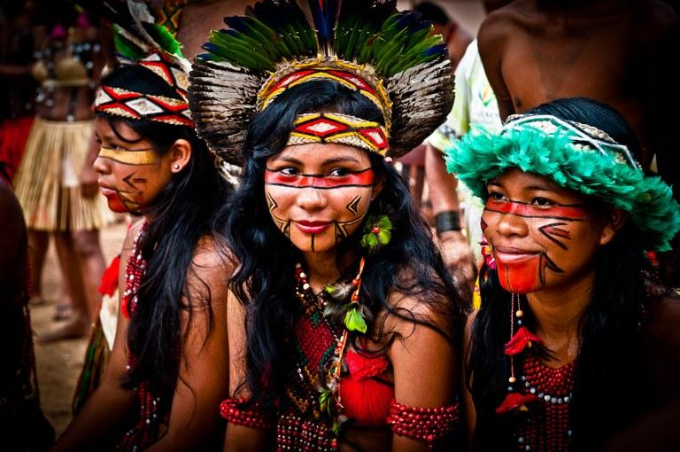
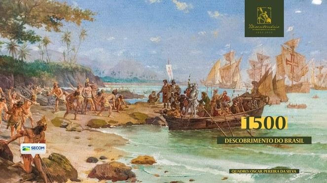
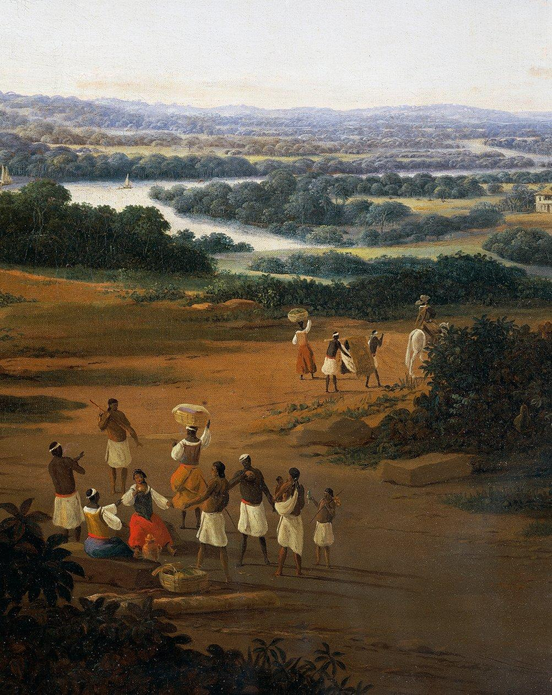
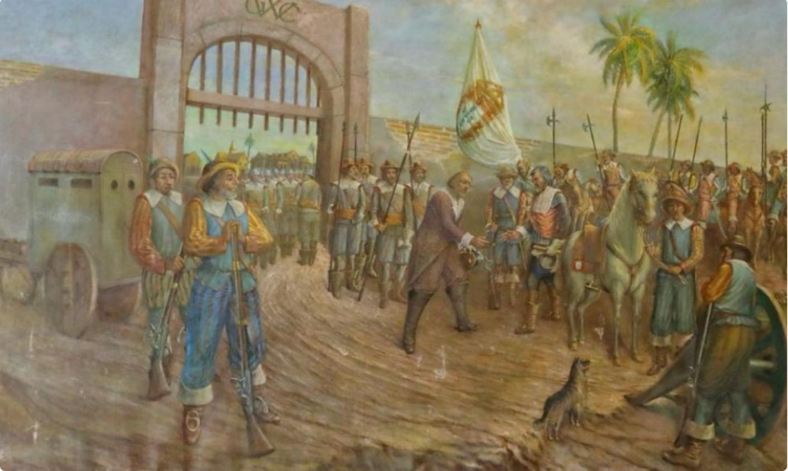
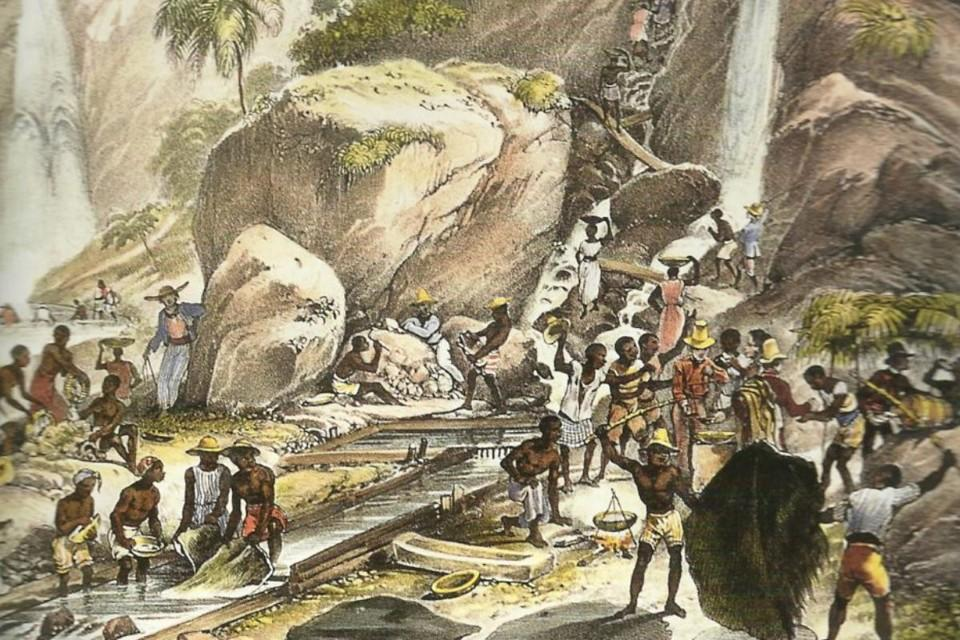
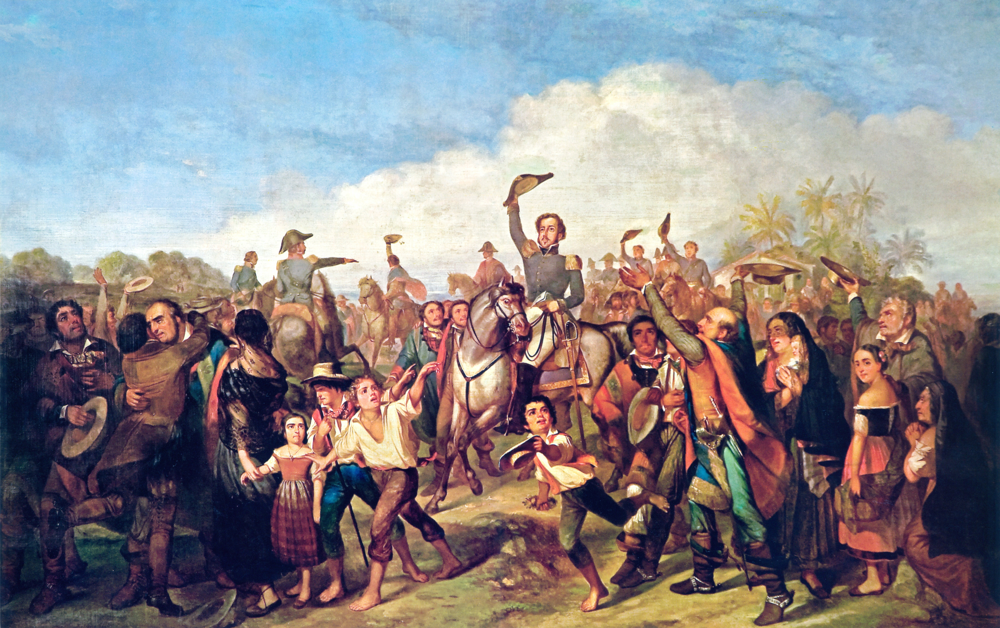
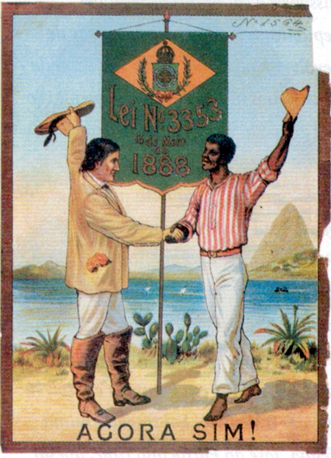
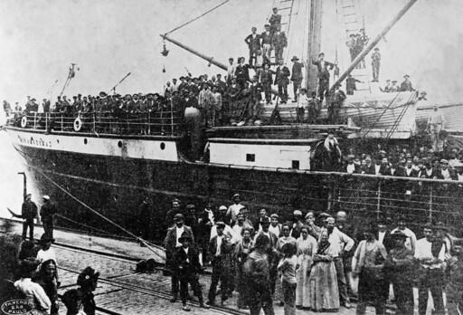
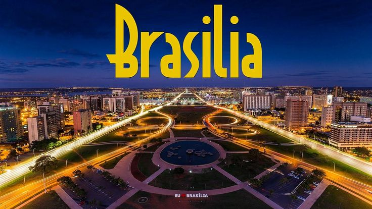

This website is dedicated to Brazil — one of the most diverse and fascinating countries in the world. The purpose of this project is to present Brazil`s culture, nature, history, and everyday life in a clear and engaging way.
Here you will find information about major cities such as Rio de Janeiro and São Paulo, unique natural regions like the Amazon rainforest, as well as Brazilian culture, music, sports, and cuisine.
This website was created as an educational and informational project to better understand how rich and diverse Brazil really is.
The goal is to inspire curiosity about the world and show Brazil not only as a travel destination, but also as a country with a deep cultural identity and history.
Brazil has one of the richest and most diverse histories in the world, shaped by indigenous civilizations, European colonization, African influence, immigration, political struggles, and economic growth.

Long before the arrival of Europeans, the territory of modern Brazil was inhabited by millions of indigenous people. Historians believe humans arrived in the region over 10,000 years ago. Hundreds of tribes lived across the vast land, including the Tupi, Guarani, Yanomami, Kayapó, and many others. These indigenous communities developed their own languages, religions, traditions, and methods of survival through hunting, fishing, farming, and trade. They lived in harmony with nature and depended heavily on the forests, rivers, and fertile lands of the region.

The history of colonial Brazil began on April 22, 1500, when Portuguese navigator Pedro Álvares Cabral reached the Brazilian coast while sailing to India. He claimed the territory for Portugal under the Treaty of Tordesillas, an agreement between Portugal and Spain that divided newly discovered lands between the two empires. At first, the Portuguese showed limited interest in the region because they were focused on trade routes to Asia. However, they soon discovered a valuable red tree called brazilwood, or “pau-brasil,” which was used to make red dye in Europe.

During the 16th century, Portugal began establishing permanent settlements along the coast. The Portuguese introduced sugar cane plantations, especially in northeastern Brazil. Sugar quickly became one of the colony’s most profitable exports, creating enormous wealth for Portugal. To work on the plantations, millions of Africans were forcibly brought to Brazil through the transatlantic slave trade. Brazil became the largest destination for enslaved Africans in the Americas, and slavery deeply shaped Brazilian society, economy, and culture for centuries.

Throughout the colonial period, Brazil faced attacks and invasions from other European powers. The French attempted to establish colonies in Rio de Janeiro and Maranhão, while the Dutch occupied parts of northeastern Brazil during the 17th century, especially around Pernambuco. Although the Portuguese eventually regained control, these conflicts influenced the development of the colony and strengthened Portuguese military presence.

In the late 17th century, explorers known as “bandeirantes” discovered large deposits of gold and diamonds in Minas Gerais. This discovery triggered the Brazilian Gold Rush. Thousands of settlers moved inland searching for wealth, leading to the rapid growth of cities such as Ouro Preto. Gold from Brazil became extremely important for the Portuguese Empire and transformed the colony into one of the richest territories in the world during the 18th century.

In 1822, Dom Pedro I declared Brazil’s independence from Portugal near the Ipiranga River in São Paulo. This event became known as the “Cry of Ipiranga.” Brazil then became the independent Empire of Brazil, with Dom Pedro I serving as emperor.

During the 19th century, slavery continued to exist in Brazil despite growing pressure to abolish it. Finally, in 1888, Princess Isabel signed the “Lei Áurea” (Golden Law), officially ending slavery in Brazil. Brazil was the last country in the Americas to abolish slavery.

In 1889, the monarchy was overthrown by the military, and Brazil became a republic. During the late 19th and early 20th centuries, millions of immigrants arrived from countries such as Italy, Germany, Japan, Spain, and Lebanon. These immigrants helped develop agriculture, industry, and urban centers.

In the 20th century, Brazil experienced industrialization, political unrest, military dictatorship, and eventually a return to democracy in 1985. Today, Brazil is famous for the Amazon Rainforest, football, samba music, Carnival celebrations, and incredible biodiversity.

The Amazon Rainforest is the largest tropical rainforest in the world and one of the most important natural regions on Earth. Most of the Amazon is located in Brazil, although it also stretches across several other South American countries.
Rio de Janeiro is one of the most famous cities in the world and one of the most visited destinations in Brazil. The city is known for its beautiful beaches, mountains, football culture, music.
Brazil is home to many famous football clubs with passionate supporters. Some of the biggest clubs include Flamengo, Palmeiras, Corinthians, Santos, São Paulo, and Fluminense. The Maracanã Stadium in Rio de Janeiro is one of the most iconic football stadiums in the world. It has hosted World Cup matches, international finals, and historic football moments.
Pelé is considered one of the greatest football players in history and one of the biggest sports legends of all time. His real name was Edson Arantes do Nascimento, and he was born on October 23, 1940, in Brazil.Pelé became famous playing for Santos FC, where he scored hundreds of goals and won many trophies. His skill, speed, creativity, and finishing made him one of the most dangerous players in football history.
The Brazilian Carnival is one of the biggest and most famous festivals in the world. Every year millions of people celebrate Carnival across Brazil with music, dancing, colorful costumes, and huge street parties.The most famous Carnival takes place in Rio de Janeiro. The city becomes full of parades, samba music, dancing, and celebrations that attract tourists from all over the world.